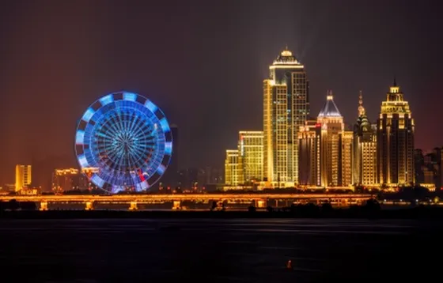
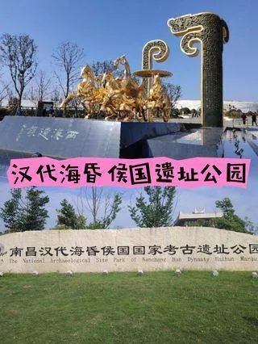
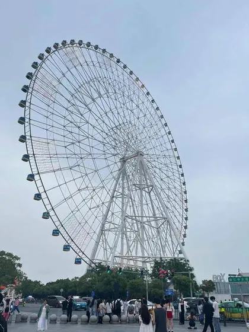
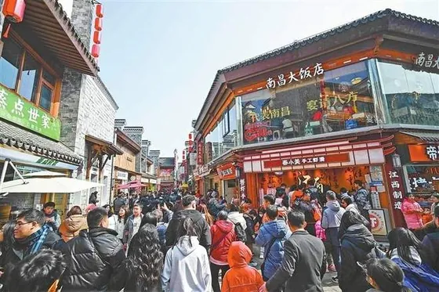
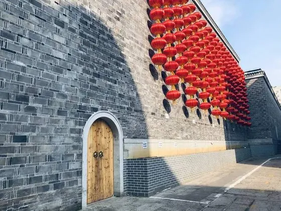
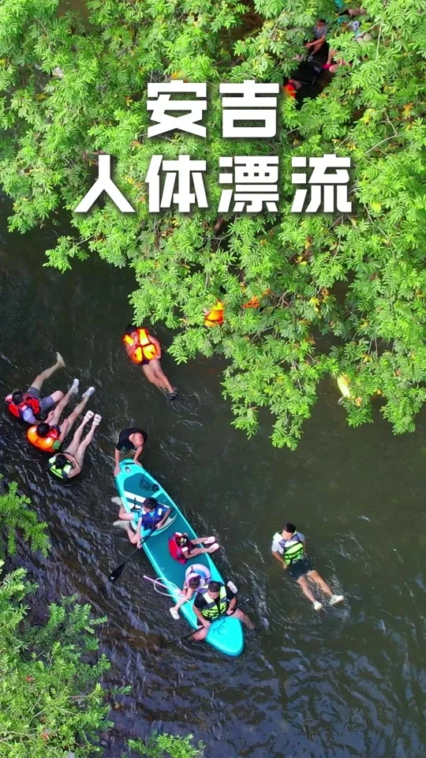
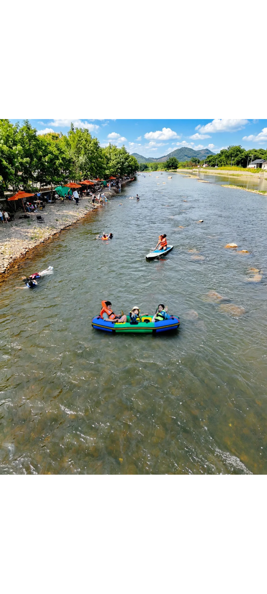
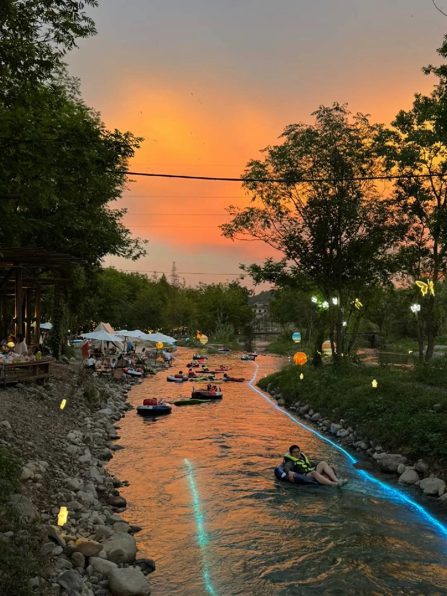

何田田的旅行攻略
把路上的细节，留成可复用的路书
江西-南昌3日亲子游
出行日期：2026年10月3日（周六）— 10月5日（周一），共3天2晚
1一、交通
去程（推荐）：10月2日晚 · 卧铺夜车
| 车次 | 出发→到达 | 时长 | 软卧票价 |
|---|---|---|---|
| K287 | 21:18 上海松江 → 06:51 南昌（次日） | 9h33m | ¥297/人 |
- 一家三口：约 ¥740-890（软卧 ¥297/人；9 岁儿童按 12306 普速规则核价，儿童票额度以出票为准）
- 晚上出发睡一觉早上到，不浪费白天时间
- K287 从上海松江站发车（非市区站，市区过去要 1 小时以上），且是过路车；国庆卧铺票额极少，建议开售当天抢，或改 10/2 白天高铁提前抵达南昌（多一晚酒店但更稳妥）
返程：10月5日晚 · 高铁
| 车次 | 出发→到达 | 时长 | 二等座 |
|---|---|---|---|
| G1388（推荐） | 18:28 南昌 → 22:48 上海虹桥 | 4h20m | ¥316 |
| G206（备选） | 19:14 南昌西 → 22:01 上海虹桥 | 2h47m | ¥356 |
| G252（备选） | 19:54 南昌西 → 22:43 上海虹桥 | 2h49m | ¥358 |
- 一家三口：约 ¥948（G1388 二等座 ¥316×3，以 12306 核价为准）
2二、行程概览
| 天数 | 日期 | 主题 | 景点 |
|---|---|---|---|
| Day 1 | 10/3 周六 | 红色历史 + 江景夜游 | 八一起义纪念馆 → 八一广场 → 赣江夜游 → 秋水广场音乐喷泉 |
| Day 2 | 10/4 周日 | 海昏侯考古 + 摩天轮夜景 | 汉代海昏侯国遗址 → 万寿宫历史文化街区 → 南昌之星摩天轮 |
| Day 3 | 10/5 周一 | 古典文化 + 返程 | 滕王阁 → 返程 |
3三、每日详细行程
Day 1：10月3日（周六）— 红色历史 + 江景夜游

Day 2：10月4日（周日）— 海昏侯考古 + 万寿宫 + 摩天轮夜景
⚠️ 海昏侯距市区 48km，建议网约车往返（单程约 ¥55 / 53min），可在滴滴/高德打车提前预约返程车；省钱替代：万寿宫直通车 11:45 发车 ⇋ 16:15 返（¥75 含门票 + 观光车 + 接送），或 666 路公交 ¥10/人（约 112min，太耗时）

Day 3：10月5日（周一）— 滕王阁 + 返程
4四、预算（一家三口，3天2晚）
| 项目 | 费用 |
|---|---|
| 去程软卧（K287 × 3人，含儿童优惠票） | 约¥740-890 |
| 返程高铁（G1388 × 3人） | 约¥948 |
| 酒店（白玉兰商务酒店，2晚） | ~¥836 |
| 门票（滕王阁 ¥50×2+¥25 + 海昏侯 ¥75×2+¥45 + 摩天轮 ¥48×3，已含儿童票价） | ~¥464 |
| 赣江夜游（× 3人） | ¥330（一楼普通票 ¥110×3） |
| 餐饮（3天） | ¥1,000-1,200 |
| 市内交通（打车/地铁） | ¥410（含海昏侯往返打车约 ¥110） |
| 合计 | 约¥4,800（建议按 ¥5,300 备） |
| 人均（2 大 1 小均摊，儿童票已核入） | 约 ¥1,600 / 人 |
| 每日现付参考（门票 + 餐饮 + 市内，不含大交通与酒店） | Day1 约 ¥840 · Day2 约 ¥900 · Day3 约 ¥550 |
5五、重要提示
住宿与天气的完整信息见「八、景点速查」和「十一、天气与穿衣」。
6六、行程距离表（高德地图实测）
7七、餐饮推荐
备选2：万小金辣椒炒肉（万寿宫店，中山路396号万寿宫商城四楼，人均¥57，评分4.2，距纪念馆101m，江西特色辣椒炒肉，下饭神器）
备选2：赣南湾·瑞金宴（普菲特广场店，怡园路与翠林路交叉口，人均¥65，评分4.6，距广场405m，瑞金客家风味，性价比高）
备选2：海昏食府（海昏侯国遗址博物馆内1楼，人均¥62，评分3.7，距遗址983m，博物馆内置餐厅，方便但选择少）
备选2：南昌大饭店·1980南昌菜（万寿宫历史文化街区C区合同巷7号，人均¥66，评分4.6，距街区102m，老南昌怀旧风，1980主题装修，适合亲子拍照）
备选2：盛香亭·铜锣湾T16店（红谷滩区铜锣湾T16广场，人均¥37，评分4.6，10:30-22:00，22家中人均最低，性价比极高）
| 必吃 | 推荐店 / 说明 | 参考价 |
|---|---|---|
| 南昌拌粉 | 周真真、高师傅，街头随处可见 | ¥5-8 |
| 瓦罐汤（肉饼汤 / 皮蛋汤） | 龙老五汤店（站前西路店） | ¥10 |
| 藜蒿炒腊肉 | 南昌第一名菜，赣菜馆基本都有 | 时价 |
| 莲花血鸭 | 赣菜代表，打平伙做得最地道 | 时价 |
| 白糖糕 | 万寿宫陈记最出名 | ¥2-3 |
| 糊羹 | 老城区大排档才有，十几种食材 | ¥8-12 |
| 帝煌烤卤 | 南昌卤味一绝，鸭脖鸭翅 | 时价 |
8八、景点速查 · 地址与导航
点「导航」用高德规划路线（手机会尝试唤起高德地图，起点自动取当前位置）；「周边搜索」用来找景点附近的吃喝。营业时间以景区当日公告为准，国庆普遍会调整。
9九、景点实拍图
按景点分组，行程里各节点可直达对应分组；另有 5 张已内联到「每日详细行程」的节点旁。点任意一张看大图。




10十、出行清单（一家三口 · 3 天 2 晚）
- 身份证（孩子也带上，景点和酒店都可能实名核验）
- 户口本或学籍证明：部分儿童优惠票检票时可能要看
- 12306 车票订单截图 / 12306 App 登录可用
- 各景点预约记录截图（纪念馆、滕王阁、海昏侯都是实名预约）
- 白天：短袖或薄长袖，防晒帽
- 早晚：薄外套或风衣，孩子再备一件防风的
- 孩子备一套换洗衣物（赣江夜游临水，万一溅水有的换）
- 舒适运动鞋：Day2 海昏侯一天要走不少路
- 儿童退烧药、退热贴、创可贴、藿香正气（备用，不希望用上）
- 防晒霜：10 月南昌午后太阳仍然很晒
- 驱蚊液：赣江边傍晚可能有蚊虫
- 湿巾、免洗洗手液：纪念馆和博物馆的互动展项摸完擦手
- 充电宝 2 万 mAh：排队 + 导航 + 拍照，手机掉电很快
- 折叠伞：10 月是南昌雨季间歇期，但月内仍有约 10 个雨日
- 水壶：景区水价翻倍，酒店烧好带上
- 少量现金：夜市小摊偶尔用得上
11十一、天气与穿衣（10 月上旬）
| 指标（历史常年值） | 参考 |
|---|---|
| 日间气温 | 24-26℃，午后晒 |
| 夜间气温 | 16-18℃，赣江边风大更凉 |
| 昼夜温差 | 可达 10-13℃ |
| 降水 | 月累计约 50mm，雨日约 10 天，以短时小雨为主 |
| 历史极端 | 最高可到 35℃+（秋老虎），最低 8℃ 上下 |
注意以上是常年同期气候值，不是天气预报。出发前 3 天务必再看一次实时预报（重点看 10/3 夜游、10/5 返程两个时段有没有雨）。
- 穿衣公式：白天短袖 + 早晚薄外套；孩子按「比大人多半件」准备
- 夜游赣江和秋水广场喷泉都在晚上江边，风大体感比市区低 3-5℃，外套务必带上
- 10 月上旬仍有秋老虎可能，正午逛万寿宫这类露天街区要给孩子补水、戴帽
- 海昏侯往返车程近 2 小时，车上空调温度提前问好，备一件孩子随手能穿的外套
数据来源：南昌市气象部门公开的历史常年资料及多家气候数据站汇总。
浙江-安吉2日溯溪漂流
出发：上海青浦新城（自驾） · 时间：这周末（夏季） · 人员：亲子（孩子 8 岁半）
核心：溯野南溪玩水 + 深溪漂流，住报福镇维漫民宿亲子套房
1一、交通（自驾 · 上海青浦往返）
去程推荐线路：青浦 → G50 沪渝高速 → S12 申嘉湖（申苏浙皖）高速 → S14 杭长（宜）高速 → 安吉北出口 → 溯野南溪（孝源街道洛四房村）
| 路段 | 里程 / 时长 | 参考费用 |
|---|---|---|
| 上海市区 → 安吉县城 G50 → S12 → S14 → 安吉北出口 | 约 220 km / 2.5–3 小时 （腾讯地图多方案规划 214–226 km、148–169 分钟） | 高速通行费约 ¥95 / 单程 |
| 青浦 → 同上线路 青浦直接上 G50，省掉市区穿城段 | 比市区出发再短约 20–30 km、省 20–30 分钟（估算） | 同上（单程） |
| 返程：报福镇 / 博物院 → 青浦 S14 杭长 → G50 沪渝 | 约 3 小时（博物院出发，含山区段） | 同上（单程） |
- 导航点位建议：去程直接搜「溯野南溪」或「洛四房村」；返程从「浙江自然博物院安吉馆」上 S14 杭长高速最顺
- 周末上午出城、周日下午返程都是高峰：09:00 前上路体感最好；返程尽量 16:00 前离开博物院
- 全程高速约 2.5 小时，建议在服务区停 1 次，给娃活动一下（也是漂流前的最后一次补给机会）
- 原台账记的「油费过路 ¥150/车」是去程成本，往返按 ¥300 左右估
- 有山路的段落（营地 → 报福镇）弯多，娃容易晕车，提前备好塑料袋和晕车贴
2二、行程概览
| 天数 | 主题 | 当日动线 | 住宿 |
|---|---|---|---|
| Day 1 | 溯溪玩水 + 西行入住 | 08:30 青浦出发 → 11:30 营地午餐 → 12:30 溯野南溪玩水 → 16:00 冲澡离园 → 16:30 西行 → 17:30 入住民宿 → 18:30 晚餐 | 维漫民宿（报福镇） |
| Day 2 | 峡谷漂流 + 博物馆返程 | 08:30 退房 → 09:00 早餐 → 09:30 深溪峡谷漂流 → 12:00 冲澡 → 12:30 午餐 → 14:30 浙江自然博物院安吉馆 → 16:00 上高速返程 | 回家 |
3三、每日详细行程
Day 1（周六）— 溯溪玩水 + 西行入住
Day 2（周日）— 峡谷漂流 + 博物馆返程
4四、预算（一家三口 · 2天1晚）
| 项目 | 费用 |
|---|---|
| 交通（往返油费 + 过路费） | 约 ¥300（去程参考 ¥150，按往返计） |
| 住宿（维漫亲子套房 1 晚） | ¥500–1,333 |
| 深溪峡谷漂流（三人票） | ¥435 |
| 餐饮（2 天，含 Day1 营地自备午食） | ¥300 |
| 溯野南溪营地门票 + 停车 | 门票以现场 / 平台为准，停车 ¥10/天 |
| 浙江自然博物院安吉馆 | 常设展免费（4D 影院 ¥30/人可选） |
| 合计（不含营地门票） | 约 ¥1,535 – ¥2,368 |
| 人均（2 大 1 小均摊） | 约 ¥510 – ¥790 |
说明：早期草稿按 ¥950–1,150 估算，是按旧票价与更低的房价档算的；按当前深溪峡谷漂流成人 ¥149 / 三人票 ¥435 的价格重算后，区间上调如上。营地门票未见统一标价页，购票以现场或平台当日价格为准。
5五、重要提示
6六、行程距离表（自驾）
说明：段落里程/时间为行程实测口径（作者自记）与地图规划参考值；跨省长途段取「上海市区 → 安吉约 220km / 2.5–3 小时」按青浦起点折算。
7七、餐饮推荐（报福镇 / 营地周边）
备选2：大竹林（评分 4.6 · 人均 ¥80 · 土鸡煲适合玩水后补一口热的）
备选2：益溪餐厅（评分 4.6 · 人均 ¥62 · 距离镇区近，赶时间首选）
- 外婆土菜馆 4.7 / ¥82 · 土鸡汤、溪鱼
- 南希南庭院 4.6 / ¥90 · 庭院环境、浙江菜
- 笋厂里 4.6 / ¥97 · 笋类时令
- 大竹林 4.6 / ¥80 · 土鸡煲
- 王家院子 4.6 / ¥66
- 益溪餐厅 4.6 / ¥62
- 报福人家 4.6 / ¥69 · 神仙鸭
评分与人均取自出发前的平台公开信息，节假日与旺季常有浮动，出发前再看一眼最新评价。
8八、景点速查 · 地址与导航
POI 名称已按地图检索优化，点「导航到这里」在手机上会先尝试唤起高德地图 App，没装则唤起百度地图 App，都没有再打开网页版（电脑上直接走网页版）。
9九、景点实拍图
图片位置已按景点分组建好，现在显示的是占位图。把实拍图转成 WebP 后，用同名文件覆盖 images/anji/ 下的文件即可原地显示（例如把营地图存成 03_溪边浅滩玩水.webp），不用改 HTML。另有 2 张已内联到「三、每日详细行程」的对应节点旁。



10十、出行清单（一家三口 · 2天1晚）
点击条目即可打勾，再点一次取消（勾选只保存在当前页面，刷新会重置）。
- 维漫亲子套房（旺季早订，确认儿童能否登记）
- 深溪峡谷漂流票（先量娃身高：>1.2m 按成人 ¥149 买，否则买三人票 ¥435）
- 溯野南溪营地门票（现场或平台购票，出发前确认当日开放）
- 浙江自然博物院安吉馆预约（提前 3 天早 7:00 公众号放号，大人和小孩都要约）
- 出发前致电漂流确认开漂时间（深溪 18957277326 / 天目山 0572-5608838）
- 孩子身份证或出生证明（民宿 18 岁以下登记要用）
- 大人身份证 / 驾驶证 / 行驶证
- 各景点预约凭证截图（博物院是实名预约）
- 少量现金（农家乐小摊偶尔用得上）
- 溯溪鞋（营地必穿，碎石滑）
- 换洗衣物两套 + 快干毛巾
- 儿童泳装 / 泳镜（水域浅，娃基本全程泡在水里）
- 防水袋（湿衣物要装起来，别弄湿后备箱）
- 大浴巾 + 拖鞋（营地淋浴房用）
- 手机挂脖防水袋（漂流挂脖固定，别放口袋）
- 一套干爽换洗衣 + 内衣（终点冲澡后整套换）
- 水枪 / 水瓢（打水仗用，也可现场买）
- 巧克力、面包等即食补给（漂流后容易饿）
- 浴巾 + 洗发 / 沐浴小样（终点淋浴热水可用）
- 防晒霜（出发前 20 分钟涂，漂流后补涂）
- 驱蚊液 + 止痒膏（溪边蚊虫多）
- 儿童晕车贴 / 塑料袋（营地到民宿是山路）
- 创可贴、碘伏棉签、藿香正气（备用，不希望用上）
- 充电宝（导航拍照掉电快）+ 车载支架
- 垃圾袋（无痕玩水，湿衣和垃圾分开装）
11十一、天气与穿衣（夏季 · 7–8 月）
| 指标（安吉常年统计值 1991–2020） | 参考 |
|---|---|
| 常年平均气温 | 16.5℃ |
| 7 月日均气温 | 高温约 34–35℃ / 低温约 25–26℃，历史极端可达 40℃ |
| 8 月日均气温 | 高温约 33–34℃ / 低温约 25℃ |
| 高温日（≥35℃） | 常年 31.1 天，其中 7 月最多约 15.2 天 |
| 年降水量 | 1478.0 mm，年雨日 143 天，集中在梅雨季与夏季雷阵雨 |
| 台风影响 | 年均约 1.6 次，以 8 月最多、9 月次多 |
| 地形差异 | 山地垂直气候明显，山区比县城体感凉，但雷阵雨来得更快 |
注意以上是常年同期气候值，不是天气预报。玩水行程务必在出发前一天看实时预报：前一天下雨会让溪水变浑变急，雨后 48 小时内营地可能封场、漂流可能临时停漂。
- 穿衣公式：速干短袖 + 短裤 + 凉鞋/溯溪鞋为主，孩子在玩水点建议直接穿泳装外加快干衣
- 正午 11:00–15:00 是高温 + 紫外线最强时段，安排在营地树荫和这类遮阴区休息
- 山区昼夜温差：入夜后体感比县城低，从溪里上来一定第一时间擦干换衣
- 雨具：折叠伞用处有限，建议带轻便雨衣（玩水时两手要腾出来）
- 7–8 月是台风高发月，遇上台风外围环流时，景点可能提前公告闭园，出发前一天确认一次
数据来源：安吉县人民政府网《气象气候》常年（1991–2020）统计值，气温月均值参考中国气象局公开资料汇总。
浙江-象山3日漂流赶海
出行日期：2026.8.28（周五）– 8.30（周日） · 2大1小（孩子 ≥ 1.1m）
核心体验：龙溪峡谷漂流 → 半边山滩涂赶海 → 南京舰 → 石浦渔港古城 → 东门岛
1一、行程总览
🚗 交通：上海青浦桂花园自驾往返，经杭州湾跨海大桥，单程约 330km / 约 3.5–4 小时
👥 人数：2大1小（孩子 ≥ 1.1m 可玩亲子勇士漂） · 💰 人均预算：约 1500–1700 元
🗺️ 路线：上海 → 沈海高速 → 象山（北：松兰山 → 中：石浦 → 南：半边山/东门岛），一路向南不折返
2二、潮汐提醒（赶海命门）
8.28–8.30 为农历七月十六～十八大潮，潮差约 3.5m，滩涂露出多、收获好。
低潮在下午（约 16:00–17:20）；上午低潮在 04:00–05:00，太早不适合带娃。赶海最佳窗口：低潮前 1 小时上滩、低潮后 1 小时撤离（约 15:30–17:30）。
| {'text': '日期', 'bold': False} | {'text': '农历', 'bold': False} | {'text': '低潮①', 'bold': False} | {'text': '低潮②', 'bold': False} | {'text': '高潮①', 'bold': False} | {'text': '高潮②', 'bold': False} | {'text': '潮型', 'bold': False} |
|---|---|---|---|---|---|---|
| 8/28 周五 | 七月十六 | ~04:30 | ~16:20 | ~09:50 | ~22:20 | 大潮 |
| 8/29 周六 | 七月十七 | ~04:50 | ~16:50 | ~10:20 | ~22:50 | 大潮 |
| 8/30 周日 | 七月十八 | ~05:20 | ~17:20 | ~10:50 | ~23:20 | 大潮 |
3三、Day 1 · 8.28 周五 · 龙溪峡谷漂流
4四、Day 2 · 8.29 周六 · 松兰山 → 半边山赶海+南京舰 → 石浦
Day2 末尾半边山 → 石浦约 15km 折返，是多玩一个岛的小代价，可接受。
5五、Day 3 · 8.30 周日 · 东门岛 → 返程
6六、住宿推荐
Night1 松兰山象山松兰山海景大酒店（松兰山景区店）：出门即沙滩，亲子方便，约 500–700/晚
Night2 石浦如家华驿系列-宁波象山石浦华驿酒店：石浦城区，逛古城/去菜场近，经济型约 200–300/晚备选：象山石浦半岛酒店（5星，家庭套房约 598+）、凤上里 Live 亲子民宿（评分 4.9，儿童泳池）
7七、饭店推荐
Day1 午餐（下高速·溪口）溪口海鲜面馆：下高速后用餐，海鲜面+虾饼，人均 60–80
Day1 晚餐（大目湾）：励记海鲜大排档（大目湾店），人均 80–120
Day2 午餐（半边山附近）：半边山度假区餐厅/门口排档，人均 70–100
Day2 晚餐（石浦菜场代加工）石浦菜场（荔港路85号）自选 → 二楼石浦海鲜加工广场/阿真面馆代加工；加工费 清蒸10/只、白灼10/道、红烧20/道
Day3 午餐（石浦）：破村·大排档·砂锅焗海鲜（石浦店），海肠捞饭/砂锅焗海鲜口碑好，人均 100–130
8八、装备清单
漂流：换洗衣物 2 套、防滑洞洞鞋（禁拖鞋）、手机防水袋、小水枪 / 水瓢、防水防晒赶海：防滑洞洞鞋、加厚防割手套、小铁铲 + 长夹子 + 带孔泡沫箱、防晒帽墨镜高倍防晒
9九、安全提醒
大潮涨潮快，低潮后 1h 内必须撤离；全程看护孩子，只在有人经营海域赶海漂流禁带首饰钱包上船，眼镜建议取下；礁石贝壳锋利，慢行看护8月底仍处休渔尾巴（9月开渔），海鲜以近海 / 养殖 + 当日直供为主，点菜前问清单价与计价方式